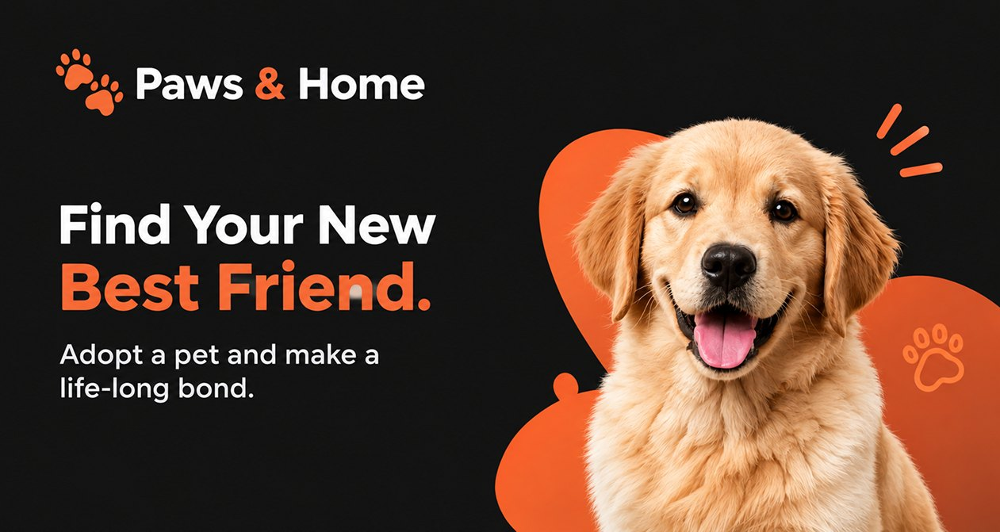
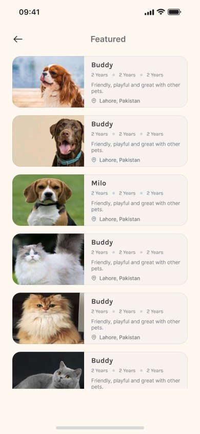
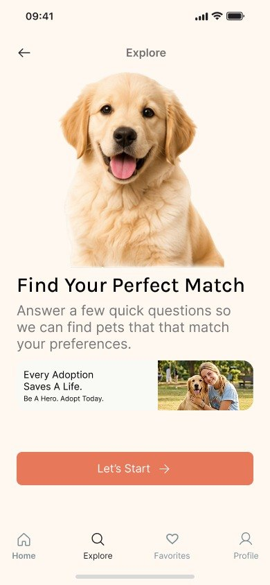
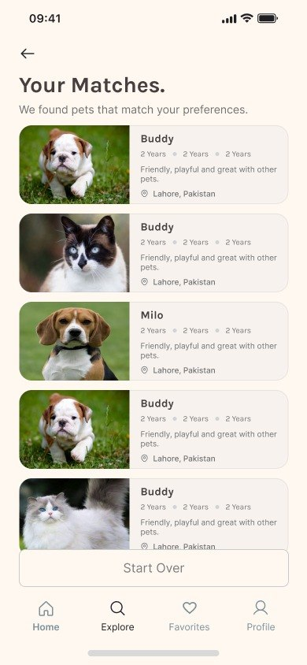
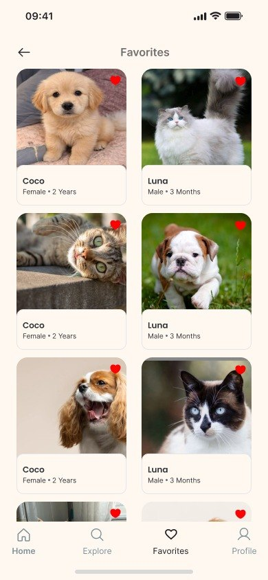
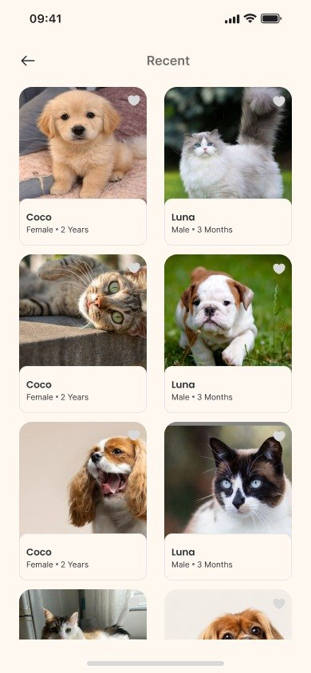
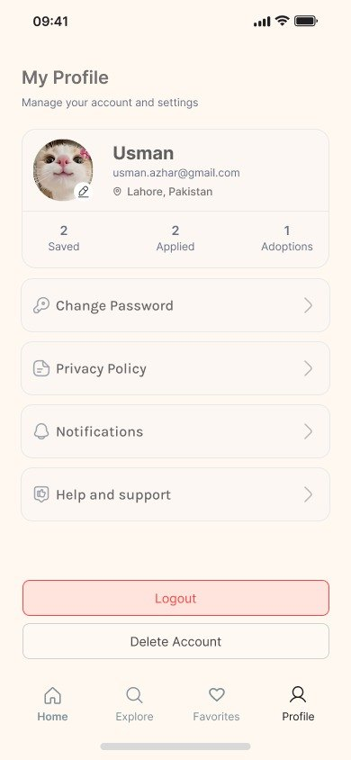
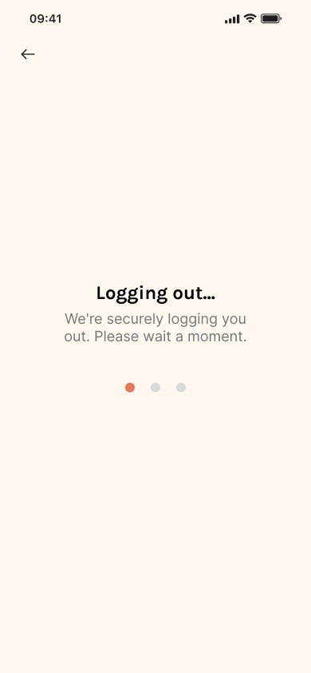

Paws & Home
A warm and friendly pet adoption app that helps people find, match with and adopt their new best friend, all in a few simple steps.

Every pet deserves a loving home
Looking for a pet online often means scrolling through long lists with little information about each animal. Paws & Home makes adoption feel personal, with a quick match quiz and clear profiles that help people choose the right companion.
- 01The problemAdoption sites are hard to browse and don't help people find a pet that fits their lifestyle.
- 02The solutionA warm cream and coral UI with category filters, a matching quiz and a simple adoption flow.
- 03My roleUser flows, wireframes, visual design and an interactive prototype.
Design Process
- 01
Research
Looked at adoption sites and shelters to learn how people search for pets.
- 02
User Flow
Mapped the path from browsing pets to sending an adoption request.
- 03
Wireframes
Planned the home, match quiz and pet profile layouts in low fidelity.
- 04
Visual Design
Created a warm cream and coral style with Karla and Inter to feel friendly.
- 05
Prototype
Connected the screens in Figma into a clickable prototype to test the flow.
Designed to make adoption feel easy
Hover or tap a feature to see it in the app.
Typography
A friendly grotesque sans-serif with a modern, minimal feel. It gives headings and pet names a warm, approachable look.
- Regular
- Medium
- Semibold
- Bold
A clean, highly readable typeface for descriptions, pet details, buttons and small labels.
- Regular
- Medium
- Semibold
- Bold
Colors
All Screens
The full adoption journey, from browsing pets and taking the match quiz to viewing a profile and managing your account. Every screen keeps the same warm, friendly style.







Thank You
Designing Paws & Home taught me how warm colors and clear pet profiles help people trust an app with a big decision. Next, I'd add chat with shelters and an adoption status tracker.
Let's Work TogetherConcept project for portfolio purposes. Pet photos are for illustration only.